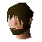

Melzar's Maze
Location at 2931, 3248 · Kingdom of Asgarnia
Open on the world map → Open in knowledge graph → Below: Melzar's Maze (underground)
NPCs
| NPC | Level | Spawns | Notable drops |
|---|---|---|---|
| 28 | 3 | Limpwurt root, Coins, Herb drop table, Bronze spear | |
| 22 | 6 | ||
| 19 | 5 | ||
| 6 | 7 | ||
| 2 | 4 | ||
| 2 | 1 | Bolt, Wizards hat, Hammer, Ball of wool | |
| 1 | 9 | ||
 Hops | 1 |